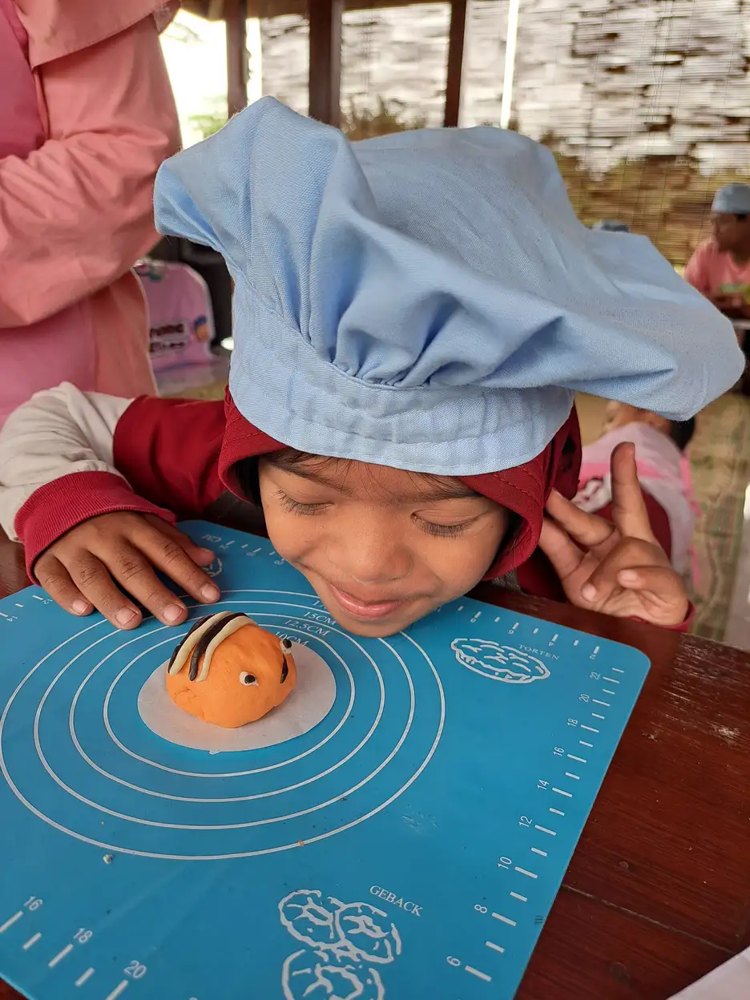
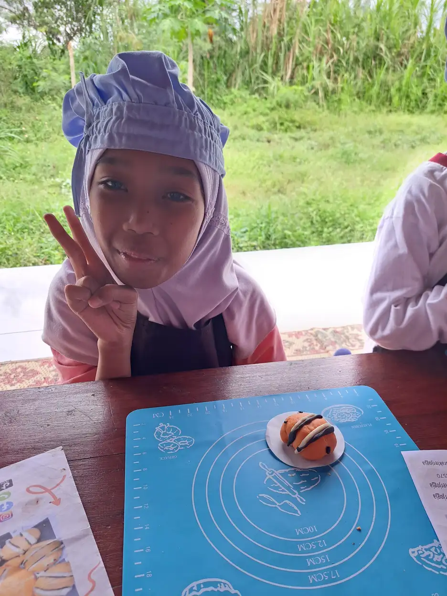

Motorik halus adalah kemampuan gerakan yang melibatkan otot-otot kecil pada tangan, jari, dan pergelangan tangan. Kemampuan ini memegang peranan sangat penting dalam kehidupan sehari-hari anak, mulai dari menulis, menggambar, mengancingkan baju, hingga memegang sendok saat makan. Tanpa perkembangan motorik halus yang optimal, anak akan mengalami kesulitan dalam banyak aktivitas dasar yang sering kita anggap sepele.
Di Yayasan Ukhuwah Kaffah Amanatullah (YUKA), kami menyaksikan langsung betapa pentingnya stimulasi motorik halus dalam mendukung tumbuh kembang anak, termasuk anak berkebutuhan khusus (ABK). Melalui Sekolah Inklusi Taruna Imani di Sleman, Yogyakarta, kami menerapkan berbagai kegiatan motorik halus yang dirancang khusus untuk membantu setiap anak mencapai potensi terbaiknya.
Artikel ini akan membahas secara lengkap tentang apa itu motorik halus, tahapan perkembangannya, tanda-tanda keterlambatan, serta berbagai latihan dan permainan stimulasi motorik halus yang bisa dilakukan di rumah maupun di sekolah. Panduan ini kami susun berdasarkan literatur ilmiah dan pengalaman nyata mendampingi anak-anak di YUKA.
Daftar Isi
- Apa Itu Motorik Halus?
- Tahapan Perkembangan Motorik Halus Anak (0-6 Tahun)
- Tanda Keterlambatan Motorik Halus
- Latihan dan Kegiatan untuk Melatih Motorik Halus
- Permainan Stimulasi Motorik Halus
- Motorik Halus pada Anak Berkebutuhan Khusus
- Program Stimulasi Motorik Halus di YUKA
- FAQ Seputar Motorik Halus
Apa Itu Motorik Halus?
Secara sederhana, motorik halus adalah kemampuan mengontrol gerakan otot-otot kecil, terutama pada tangan dan jari-jari. Kemampuan ini berbeda dengan motorik kasar yang melibatkan otot-otot besar untuk aktivitas seperti berlari, melompat, atau melempar bola. Motorik halus membutuhkan koordinasi yang lebih presisi antara mata dan tangan (koordinasi mata-tangan) untuk menyelesaikan tugas-tugas yang memerlukan ketelitian.
Menurut para ahli perkembangan anak, motorik halus mencakup beberapa komponen utama:
- Ketangkasan jari (finger dexterity): Kemampuan menggerakkan jari-jari secara individual dan terkoordinasi, misalnya saat mengetik, memainkan alat musik, atau meronce manik-manik.
- Kekuatan genggaman (grip strength): Kemampuan menggenggam dan menahan benda dengan tekanan yang sesuai, seperti memegang pensil, memeras spons, atau membuka tutup botol.
- Koordinasi bilateral: Kemampuan menggunakan kedua tangan secara bersamaan untuk menyelesaikan tugas, contohnya menggunting kertas (satu tangan memegang gunting, tangan lain memegang kertas).
- Koordinasi mata-tangan: Kemampuan mengarahkan gerakan tangan berdasarkan informasi visual, seperti saat menggambar mengikuti pola, memasukkan benang ke lubang jarum, atau menangkap bola kecil.
Kemampuan motorik halus sangat erat kaitannya dengan kesiapan anak untuk bersekolah. Anak yang memiliki perkembangan motorik halus yang baik akan lebih mudah belajar menulis, menggambar, dan mengerjakan berbagai tugas akademik. Sebaliknya, anak yang mengalami keterlambatan motorik halus mungkin merasa frustasi saat harus mengerjakan tugas-tugas tersebut, yang pada akhirnya dapat memengaruhi rasa percaya diri dan motivasi belajarnya.
Penting untuk dipahami bahwa perkembangan motorik halus anak tidak terjadi secara instan. Proses ini membutuhkan waktu, latihan berulang, dan stimulasi yang konsisten dari lingkungan sekitar. Orang tua dan guru memiliki peran besar dalam memberikan kesempatan dan dukungan bagi anak untuk mengembangkan keterampilan ini. Untuk memahami lebih jauh tentang bagaimana peran orang tua dalam mendukung tumbuh kembang anak, silakan baca artikel kami tentang peran orang tua dalam pendidikan inklusi.
Tahukah Anda?
Penelitian menunjukkan bahwa kemampuan motorik halus pada usia prasekolah merupakan salah satu prediktor terbaik untuk keberhasilan akademik anak di sekolah dasar. Anak dengan keterampilan motorik halus yang baik cenderung memiliki kemampuan menulis, membaca, dan berhitung yang lebih baik dibandingkan anak seusianya yang memiliki keterampilan motorik halus kurang optimal.
Tahapan Perkembangan Motorik Halus Anak (0-6 Tahun)
Setiap anak berkembang dengan kecepatan yang berbeda-beda. Namun, secara umum ada tahapan-tahapan perkembangan motorik halus yang bisa dijadikan acuan oleh orang tua dan pendidik. Memahami tahapan ini akan membantu Anda mengenali apakah perkembangan motorik halus anak sudah sesuai atau memerlukan perhatian khusus.
Usia 0-6 Bulan: Fase Refleks dan Eksplorasi Awal
Pada periode ini, bayi baru lahir memiliki refleks menggenggam (grasp reflex) secara alami. Ketika kita meletakkan jari di telapak tangan bayi, ia akan otomatis menggenggamnya dengan erat. Refleks ini merupakan fondasi awal dari perkembangan motorik halus.
Seiring bertambahnya usia, bayi mulai mengembangkan kemampuan berikut:
- Membuka dan menutup telapak tangan secara sadar
- Meraih benda yang berada di dekatnya
- Memindahkan benda dari satu tangan ke tangan lainnya
- Memegang benda dengan seluruh telapak tangan (palmar grasp)
Usia 6-12 Bulan: Mengembangkan Genggaman
Di usia ini, bayi mulai mengembangkan kemampuan memegang yang lebih canggih. Salah satu pencapaian penting pada periode ini adalah munculnya pincer grasp, yaitu kemampuan mengambil benda kecil menggunakan ibu jari dan telunjuk. Kemampuan ini merupakan tonggak penting dalam perkembangan motorik halus.
- Mengambil makanan kecil (seperti sereal atau potongan buah) dengan jari
- Memegang botol susu sendiri
- Menepuk-nepukkan tangan
- Memasukkan dan mengeluarkan benda dari wadah
- Membalik halaman buku (beberapa halaman sekaligus)
Usia 1-2 Tahun: Eksplorasi Aktif
Tahap ini ditandai dengan meningkatnya kemampuan anak untuk memanipulasi benda-benda di sekitarnya. Anak mulai menggunakan tangannya dengan lebih terarah dan bertujuan.
- Mencoret-coret dengan krayon di atas kertas
- Menyusun 2-4 balok ke atas
- Memutar pegangan pintu atau tutup botol
- Memegang sendok dan mencoba makan sendiri
- Membalik halaman buku satu per satu
- Melepas kaos kaki dan sepatu sendiri
Usia 2-3 Tahun: Koordinasi Semakin Baik
Pada usia ini, koordinasi tangan anak semakin berkembang pesat. Anak mulai bisa melakukan tugas-tugas yang membutuhkan ketepatan lebih tinggi.
- Menggambar garis vertikal dan horizontal
- Menyusun 6-8 balok ke atas
- Mulai menggunakan gunting (dengan pengawasan)
- Memutar tutup botol dan membuka kemasan
- Meremas dan membentuk plastisin sederhana
- Mulai memegang pensil dengan genggaman tripod (tiga jari)

Usia 3-4 Tahun: Keterampilan Mulai Matang
Di usia prasekolah, anak mulai menunjukkan kemampuan motorik halus yang lebih matang dan terstruktur. Berbagai kegiatan motorik halus pada usia ini menjadi lebih kompleks.
- Menggambar lingkaran dan bentuk sederhana lainnya
- Menggunting kertas mengikuti garis lurus
- Mengancingkan baju dengan bantuan minimal
- Mewarnai gambar tanpa terlalu banyak keluar garis
- Menggunakan lem dan menempelkan benda pada kertas
- Menyusun puzzle sederhana (4-12 keping)
- Menulis beberapa huruf cetak, terutama huruf-huruf dalam namanya
Usia 4-5 Tahun: Persiapan Menulis
Pada tahap ini, anak semakin siap untuk kegiatan menulis formal. Koordinasi mata-tangan semakin presisi, dan kekuatan otot jari semakin baik.
- Menggambar bentuk kotak, segitiga, dan bentuk geometris sederhana
- Menggunting mengikuti pola lengkung
- Menulis nama sendiri
- Menggambar orang dengan detail (kepala, badan, tangan, kaki)
- Mengancingkan baju secara mandiri
- Mengikat tali sepatu (dengan latihan)
- Mewarnai dengan rapi di dalam garis
Usia 5-6 Tahun: Keterampilan Lanjutan
Menjelang usia sekolah, kemampuan motorik halus anak sudah cukup berkembang untuk mendukung berbagai kegiatan akademik dan kemandirian sehari-hari.
- Menulis huruf dan angka dengan cukup rapi
- Menggunakan penggaris untuk menggambar garis lurus
- Menggunting bentuk yang kompleks
- Mengikat pita dan tali sepatu sendiri
- Membangun konstruksi dari balok atau lego yang lebih detail
- Menggunakan pisau makan (dengan pengawasan)
- Menjahit dengan benang dan jarum plastik
"Setiap anak memiliki ritme perkembangannya sendiri. Yang terpenting adalah memberikan stimulasi yang konsisten, lingkungan yang mendukung, dan kesabaran yang tulus. Jangan terburu-buru membandingkan anak satu dengan yang lain."
Tanda Keterlambatan Motorik Halus
Meskipun setiap anak memiliki kecepatan perkembangan yang berbeda, ada beberapa tanda yang perlu diwaspadai orang tua dan guru. Keterlambatan motorik halus bisa menjadi indikasi adanya masalah perkembangan yang memerlukan penanganan lebih lanjut, termasuk melalui terapi okupasi.
Berikut adalah tanda-tanda keterlambatan motorik halus berdasarkan usia:
Pada Bayi (0-12 Bulan)
- Tidak menunjukkan refleks menggenggam pada usia 2 bulan
- Belum bisa meraih benda di usia 5-6 bulan
- Tidak bisa memindahkan benda dari satu tangan ke tangan lain di usia 8 bulan
- Belum menunjukkan pincer grasp di usia 12 bulan
Pada Batita (1-3 Tahun)
- Tidak mampu memegang krayon dan mencoret-coret di usia 18 bulan
- Kesulitan menyusun 2 balok di usia 2 tahun
- Tidak bisa memegang sendok dengan benar di usia 2 tahun
- Belum bisa memutar tutup botol atau pegangan pintu di usia 3 tahun
Pada Usia Prasekolah (3-6 Tahun)
- Kesulitan memegang pensil dengan benar di usia 4 tahun
- Tidak mampu menggunting kertas mengikuti garis di usia 4-5 tahun
- Sulit mengancingkan baju di usia 5 tahun
- Tulisan tangan sangat sulit dibaca di usia 6 tahun
- Menghindari kegiatan menggambar, mewarnai, atau menggunting
- Sering mengeluh tangan lelah saat menulis
- Kesulitan menyusun puzzle yang sesuai usianya
Kapan Harus Berkonsultasi?
Jika anak Anda menunjukkan beberapa tanda keterlambatan motorik halus, disarankan untuk segera berkonsultasi dengan dokter anak atau terapis okupasi. Semakin dini masalah terdeteksi, semakin baik hasil intervensi yang bisa dicapai. Proses asesmen anak berkebutuhan khusus dapat membantu mengidentifikasi area yang perlu mendapat perhatian khusus.
Keterlambatan motorik halus dapat disebabkan oleh berbagai faktor, di antaranya:
- Prematuritas: Bayi yang lahir prematur mungkin memerlukan waktu lebih lama untuk mencapai tonggak perkembangan motorik halus.
- Kurangnya stimulasi: Anak yang tidak mendapatkan kesempatan cukup untuk mengeksplorasi dan memanipulasi benda akan mengalami keterlambatan perkembangan motorik halus.
- Kondisi medis: Beberapa kondisi seperti Down syndrome, cerebral palsy, atau gangguan neurologis lainnya dapat memengaruhi perkembangan motorik halus.
- Gangguan perkembangan: Anak dengan ADHD atau gangguan spektrum autisme sering mengalami tantangan dalam motorik halus.
- Hipotonia (tonus otot rendah): Kondisi ini menyebabkan otot-otot terasa lembek dan lemah, sehingga anak kesulitan melakukan gerakan-gerakan halus.
Latihan dan Kegiatan untuk Melatih Motorik Halus
Kabar baiknya, motorik halus dapat dilatih dan distimulasi melalui berbagai kegiatan yang menyenangkan. Kunci utamanya adalah konsistensi dan membuat aktivitas tersebut terasa seperti bermain, bukan seperti tugas atau kewajiban. Berikut adalah berbagai latihan motorik halus yang bisa dilakukan di rumah maupun di sekolah:
1. Meremas Plastisin atau Play Dough
Bermain plastisin atau play dough adalah salah satu cara paling efektif untuk melatih motorik halus anak. Aktivitas meremas, menekan, menggulung, dan membentuk plastisin akan memperkuat otot-otot kecil pada tangan dan jari anak. Anda bisa mengajak anak membuat berbagai bentuk seperti bola, ular, bunga, atau bentuk-bentuk lain yang disukai anak.
Selain plastisin buatan pabrik, Anda juga bisa membuat play dough sendiri di rumah menggunakan tepung terigu, air, garam, minyak goreng, dan pewarna makanan. Play dough buatan sendiri lebih aman karena tidak mengandung bahan kimia berbahaya.
2. Menggunting Kertas
Kegiatan menggunting melatih koordinasi bilateral tangan anak, yaitu kemampuan menggunakan kedua tangan secara bersamaan dengan fungsi yang berbeda. Satu tangan memegang dan menggerakkan gunting, sementara tangan lainnya memegang dan mengarahkan kertas.
Mulailah dengan gunting yang aman untuk anak (gunting berujung tumpul). Untuk pemula, minta anak menggunting secara bebas tanpa mengikuti pola. Secara bertahap, tingkatkan kesulitan dengan meminta anak menggunting mengikuti garis lurus, garis lengkung, hingga pola-pola yang lebih kompleks seperti lingkaran, bintang, atau siluet hewan.
3. Mewarnai dan Menggambar
Aktivitas mewarnai dan menggambar tidak hanya melatih kreativitas anak, tetapi juga merupakan latihan motorik halus yang sangat baik. Saat mewarnai, anak belajar mengontrol gerakan tangan agar tetap di dalam garis. Saat menggambar, anak melatih koordinasi mata-tangan untuk mewujudkan bentuk yang ada di pikirannya.
Sediakan berbagai alat gambar untuk anak: krayon, pensil warna, spidol, cat air, dan kuas. Setiap alat memberikan pengalaman motorik yang berbeda. Krayon membutuhkan tekanan lebih kuat, pensil warna memerlukan kontrol yang lebih halus, sementara kuas melatih koordinasi dan kelenturan pergelangan tangan.

4. Meronce Manik-Manik
Meronce atau merangkai manik-manik adalah kegiatan motorik halus klasik yang sangat bermanfaat. Anak harus memegang manik-manik kecil dengan jari, kemudian memasukkan benang ke dalam lubang kecil di tengah manik-manik. Aktivitas ini melatih pincer grasp, koordinasi mata-tangan, dan kesabaran anak.
Untuk anak yang masih kecil (2-3 tahun), gunakan manik-manik berukuran besar dengan lubang yang cukup lebar dan tali yang kaku (seperti tali sepatu). Seiring bertambahnya kemampuan anak, gunakan manik-manik yang lebih kecil dan benang yang lebih tipis.
5. Menulis dan Menebalkan Garis
Sebelum anak belajar menulis huruf, kegiatan menebalkan garis merupakan tahap persiapan yang sangat penting. Buatlah lembar kerja dengan garis-garis putus-putus yang membentuk berbagai pola: garis lurus, garis zigzag, garis lengkung, spiral, dan bentuk-bentuk sederhana. Minta anak menebalkan garis tersebut menggunakan pensil atau krayon.
Kegiatan ini melatih anak mengontrol tekanan pensil, mengarahkan gerakan tangan, dan mengembangkan kekuatan otot jari yang diperlukan untuk menulis. Pastikan anak memegang pensil dengan genggaman yang benar (tripod grasp) untuk membangun kebiasaan yang baik sejak awal.
6. Memindahkan Benda Kecil dengan Pinset atau Sumpit
Kegiatan memindahkan benda-benda kecil (seperti pom-pom, kacang-kacangan, atau manik-manik) menggunakan pinset atau sumpit adalah latihan yang sangat baik untuk memperkuat otot-otot kecil di jari. Selain itu, aktivitas ini juga melatih konsentrasi dan kesabaran anak.
Sediakan dua wadah: satu berisi benda-benda kecil, satu kosong. Minta anak memindahkan benda dari wadah pertama ke wadah kedua menggunakan pinset atau sumpit. Untuk variasi, Anda bisa meminta anak mengelompokkan benda berdasarkan warna atau ukuran saat memindahkannya.
7. Memasukkan Kancing Baju
Mengancingkan baju adalah keterampilan hidup sehari-hari yang memerlukan koordinasi motorik halus yang baik. Kedua tangan harus bekerja sama: satu tangan memegang kancing, tangan lainnya menahan lubang kancing, lalu anak harus mendorong kancing melewati lubang tersebut.
Untuk melatih keterampilan ini, Anda bisa membuat papan latihan kancing dengan menjahit beberapa kancing pada sehelai kain yang diberi lubang kancing. Anak bisa berlatih berulang kali tanpa harus mengenakan baju sungguhan, sehingga prosesnya lebih nyaman dan tidak membuat anak frustasi.
8. Bermain Puzzle
Bermain puzzle melatih koordinasi mata-tangan, kemampuan spasial, dan ketepatan gerakan jari. Anak harus mengambil kepingan puzzle, membolak-baliknya untuk menemukan posisi yang tepat, lalu memasangnya di tempat yang sesuai. Semua proses ini melibatkan motorik halus secara intensif.
Pilih puzzle yang sesuai dengan usia dan kemampuan anak. Untuk anak usia 2-3 tahun, puzzle dengan pegangan (knob puzzle) sangat cocok karena mudah dipegang. Usia 3-4 tahun bisa mencoba puzzle 8-12 keping. Usia 4-6 tahun bisa menantang diri dengan puzzle 20-50 keping atau lebih.
Tips Melatih Motorik Halus di Rumah
Jadikan latihan motorik halus sebagai bagian dari rutinitas harian yang menyenangkan. Biarkan anak membantu di dapur (mengaduk adonan, memotong buah yang lunak), merawat tanaman (menyiram dengan botol semprot, memindahkan tanah), atau menyelesaikan tugas-tugas rumah tangga sederhana (melipat handuk, memasangkan kaos kaki). Kegiatan sehari-hari ini sebenarnya adalah latihan motorik halus yang alami dan efektif.
Permainan Stimulasi Motorik Halus
Selain latihan-latihan di atas, ada banyak permainan motorik halus yang bisa membuat proses stimulasi menjadi lebih seru dan menyenangkan bagi anak. Berikut beberapa di antaranya:
Permainan Konstruksi
Mainan konstruksi seperti Lego, balok susun, atau magnetic tiles sangat efektif untuk melatih motorik halus. Anak harus memegang kepingan-kepingan kecil, menyambungkan satu sama lain, dan membangun struktur sesuai imajinasinya. Kegiatan ini melatih kekuatan genggaman, ketepatan gerakan, dan koordinasi bilateral.
Untuk anak yang lebih kecil (2-3 tahun), gunakan balok berukuran besar seperti Mega Bloks atau Duplo. Untuk anak usia 4-6 tahun, Lego ukuran standar memberikan tantangan motorik yang lebih tinggi karena kepingannya lebih kecil dan membutuhkan tekanan yang lebih presisi untuk menyambungkan.
Permainan Seni dan Kerajinan
Kegiatan seni dan kerajinan tangan menawarkan berbagai stimulasi motorik halus yang kaya. Beberapa contoh kegiatan yang bisa dilakukan:
- Kolase: Menggunting gambar dari majalah bekas dan menempelkannya pada kertas untuk membuat karya kolase.
- Origami: Melipat kertas menjadi berbagai bentuk. Mulai dari bentuk sederhana seperti pesawat atau perahu, hingga bentuk yang lebih kompleks.
- Finger painting: Melukis menggunakan jari, melatih sensori taktil sekaligus motorik halus.
- Menjahit kartu: Menggunakan tali untuk menjahit lubang-lubang pada kartu plastik atau karton tebal.
- Membuat gelang dari benang: Menganyam atau merajut benang warna-warni menjadi gelang persahabatan.
Permainan Air dan Pasir
Bermain air dan pasir memberikan pengalaman sensoris yang kaya sekaligus melatih motorik halus. Anak bisa menuangkan air dari satu wadah ke wadah lain, menyemprotkan air menggunakan botol semprot, atau membangun istana pasir. Setiap aktivitas ini melibatkan gerakan-gerakan halus yang melatih otot tangan dan jari.
Sediakan berbagai alat untuk bermain: corong, sendok, cetakan, sekop kecil, dan wadah berbagai ukuran. Variasi alat akan memberikan pengalaman motorik yang beragam bagi anak.
Permainan Papan dan Kartu
Beberapa permainan papan dan kartu juga melatih motorik halus, misalnya:
- Permainan mengambil kartu: Membalik dan mengambil kartu satu per satu melatih jari untuk bekerja dengan presisi.
- Jenga atau permainan balok susun: Mengambil balok satu per satu tanpa merobohkan menara membutuhkan kontrol motorik halus yang sangat baik.
- Operation game: Permainan ini secara khusus melatih koordinasi mata-tangan dan ketepatan gerakan.
- Permainan menjumput benda: Menggunakan alat untuk mengambil benda kecil, seperti permainan Bed Bugs atau serupa.
Permainan Digital yang Mendukung
Meskipun bermain gadget tidak boleh menjadi satu-satunya stimulasi, beberapa aplikasi dan permainan digital dirancang untuk melatih koordinasi mata-tangan, seperti permainan menggambar, puzzle digital, atau permainan yang membutuhkan gerakan jari presisi pada layar sentuh. Namun, batasi waktu layar dan pastikan tetap mengutamakan aktivitas fisik langsung.

Motorik Halus pada Anak Berkebutuhan Khusus
Anak berkebutuhan khusus sering mengalami tantangan lebih besar dalam perkembangan motorik halus. Beberapa kondisi yang umum memengaruhi motorik halus antara lain Down syndrome, cerebral palsy, gangguan spektrum autisme, ADHD, dan keterlambatan perkembangan global. Setiap kondisi memiliki karakteristik dan kebutuhan stimulasi yang berbeda.
Down Syndrome dan Motorik Halus
Anak dengan Down syndrome umumnya mengalami hipotonia (tonus otot yang rendah), yang menyebabkan otot-otot tangan dan jari terasa lebih lemah. Akibatnya, mereka membutuhkan waktu lebih lama untuk mengembangkan kemampuan motorik halus. Stimulasi yang konsisten dan sabar sangat diperlukan untuk membantu anak-anak ini mengembangkan keterampilan seperti menggenggam pensil, mengancingkan baju, dan menulis.
Di YUKA, kami memiliki pengalaman mendampingi anak-anak dengan Down syndrome dan melihat sendiri bahwa dengan latihan yang teratur dan lingkungan yang mendukung, mereka bisa mencapai kemajuan yang luar biasa dalam motorik halus.
ADHD dan Motorik Halus
Anak dengan ADHD sering mengalami kesulitan dalam tugas-tugas motorik halus, bukan karena ketidakmampuan fisik, melainkan karena tantangan dalam mempertahankan konsentrasi dan mengontrol impulsivitas. Mereka mungkin terburu-buru saat menulis sehingga tulisannya sulit dibaca, atau kehilangan kesabaran saat mengerjakan tugas yang membutuhkan ketelitian seperti menggunting pola atau meronce manik-manik.
Strategi yang efektif untuk anak ADHD adalah membagi tugas menjadi langkah-langkah kecil, memberikan jeda istirahat di antara kegiatan, dan menggunakan timer visual untuk membantu anak mengelola waktu dan fokusnya.
Slow Learner dan Motorik Halus
Anak slow learner mungkin memerlukan pengulangan yang lebih banyak dan waktu yang lebih lama untuk menguasai keterampilan motorik halus dibandingkan teman sebayanya. Penting untuk memberikan instruksi yang jelas, langkah demi langkah, dan tidak terburu-buru menambah tingkat kesulitan sebelum anak benar-benar menguasai tahap sebelumnya.
Peran Terapi Okupasi
Bagi anak berkebutuhan khusus yang mengalami keterlambatan motorik halus yang signifikan, terapi okupasi merupakan intervensi profesional yang sangat disarankan. Terapis okupasi memiliki keahlian khusus dalam menilai kemampuan motorik halus anak dan merancang program latihan yang disesuaikan dengan kebutuhan individual setiap anak.
Dalam terapi okupasi, terapis menggunakan berbagai teknik dan alat bantu untuk memperkuat otot-otot tangan, meningkatkan koordinasi, dan mengajarkan strategi adaptif agar anak bisa menjalankan aktivitas sehari-hari secara lebih mandiri. Terapis juga bekerja sama dengan orang tua dan guru untuk memastikan stimulasi motorik halus berlanjut di rumah dan di sekolah.
"Setiap anak berkebutuhan khusus memiliki potensi untuk berkembang. Yang mereka butuhkan adalah kesabaran, dukungan, dan pendekatan yang sesuai dengan kebutuhan unik mereka."
Program Stimulasi Motorik Halus di YUKA
Di YUKA, stimulasi motorik halus bukan sekadar kegiatan tambahan, melainkan bagian integral dari kurikulum pendidikan kami. Kami percaya bahwa setiap anak, terlepas dari kondisi dan kemampuannya, berhak mendapatkan stimulasi perkembangan yang optimal. Berikut adalah program-program yang kami selenggarakan:
Cooking Class (Kelas Memasak)
Salah satu program unggulan kami adalah kelas memasak atau cooking class yang secara khusus dirancang untuk melatih motorik halus anak. Dalam kegiatan ini, anak-anak belajar mengaduk adonan, meremas bahan, menghias kue, menggunakan cetakan, menuangkan bahan ke wadah, dan berbagai aktivitas memasak lainnya yang melibatkan gerakan-gerakan halus.
Cooking class tidak hanya melatih motorik halus, tetapi juga mengembangkan kemampuan sensoris (menyentuh berbagai tekstur bahan), keterampilan sosial (bekerja sama dengan teman), kemampuan mengikuti instruksi, serta kemandirian anak. Banyak orang tua yang melaporkan kemajuan signifikan pada motorik halus anak mereka setelah mengikuti program ini secara rutin.
Kegiatan Seni dan Kerajinan
Kami menyelenggarakan berbagai kegiatan seni dan kerajinan tangan yang disesuaikan dengan kemampuan dan minat setiap anak. Kegiatan ini mencakup melukis, mewarnai, menggunting, menempel, melipat kertas, dan membuat berbagai hasil karya tangan. Setiap kegiatan dirancang dengan tingkat kesulitan yang bervariasi sehingga setiap anak bisa berpartisipasi sesuai kemampuannya.
Terapi Okupasi Terintegrasi
Kami bekerja sama dengan terapis okupasi profesional untuk memberikan sesi terapi yang terintegrasi dengan program pendidikan kami. Setiap anak mendapatkan asesmen yang menyeluruh untuk mengidentifikasi kekuatan dan area yang perlu dikembangkan, termasuk kemampuan motorik halus. Berdasarkan hasil asesmen, terapis menyusun program latihan individual yang dapat dijalankan baik di sekolah maupun di rumah.
Program Kemandirian Harian
Kami mengajarkan keterampilan hidup sehari-hari yang secara alami melatih motorik halus, seperti mengancingkan baju, memakai sepatu, melipat pakaian, makan menggunakan sendok dan garpu, serta membersihkan meja. Program ini membantu anak menjadi lebih mandiri sekaligus memperkuat motorik halusnya secara alami.
Bergabunglah dengan YUKA
Jika Anda memiliki anak yang membutuhkan stimulasi motorik halus, baik anak berkebutuhan khusus maupun anak umumnya, kami mengundang Anda untuk mengenal lebih jauh program-program di YUKA. Tim kami siap berdiskusi tentang kebutuhan spesifik anak Anda dan bagaimana kami bisa membantu. Hubungi kami di +62 812-2991-2332 atau kunjungi Sekolah Inklusi Taruna Imani di Sleman, Yogyakarta.
FAQ Seputar Motorik Halus
1. Apa itu motorik halus pada anak?
Motorik halus adalah kemampuan gerakan yang melibatkan otot-otot kecil pada tangan, jari, dan pergelangan tangan. Kemampuan ini diperlukan untuk melakukan aktivitas sehari-hari seperti menulis, mengancingkan baju, menggunting, menggambar, dan memegang benda-benda kecil. Perkembangan motorik halus dimulai sejak bayi lahir dan terus berkembang hingga usia sekolah.
2. Pada usia berapa motorik halus anak mulai berkembang?
Motorik halus anak mulai berkembang sejak lahir dengan gerakan refleks menggenggam. Pada usia 3-6 bulan, bayi mulai meraih dan memegang benda. Usia 1-2 tahun, anak mulai bisa mencoret-coret dan menyusun balok. Usia 3-4 tahun, anak mampu menggunting dan menggambar bentuk sederhana. Usia 5-6 tahun, anak sudah bisa menulis huruf dan angka serta melakukan kegiatan yang lebih kompleks.
3. Apa tanda keterlambatan motorik halus pada anak?
Tanda keterlambatan motorik halus antara lain: anak kesulitan memegang pensil atau sendok pada usia yang seharusnya sudah bisa, tidak mampu menggunting kertas di usia 4 tahun, sulit mengancingkan baju atau mengikat tali sepatu, tulisan tangan sangat sulit dibaca, menghindari kegiatan menggambar atau mewarnai, serta kesulitan menyusun puzzle sederhana. Jika Anda menemukan tanda-tanda ini, segera konsultasikan dengan terapis okupasi.
4. Bagaimana cara melatih motorik halus anak di rumah?
Cara melatih motorik halus anak di rumah antara lain: bermain plastisin atau play dough, menggunting kertas mengikuti pola, mewarnai dan menggambar, meronce manik-manik, bermain puzzle, memasukkan kancing baju, memindahkan benda kecil dengan pinset atau sumpit, serta kegiatan memasak sederhana seperti membentuk adonan. Lakukan secara rutin dan menyenangkan agar anak termotivasi.
5. Apakah YUKA menyediakan program stimulasi motorik halus untuk anak berkebutuhan khusus?
Ya, YUKA menyediakan program stimulasi motorik halus melalui Sekolah Inklusi Taruna Imani di Sleman, Yogyakarta. Program ini mencakup terapi okupasi, kegiatan memasak (cooking class), seni dan kerajinan tangan, serta berbagai aktivitas terstruktur yang dirancang untuk meningkatkan kemampuan motorik halus anak berkebutuhan khusus. Hubungi kami di +62 812-2991-2332 untuk informasi lebih lanjut.